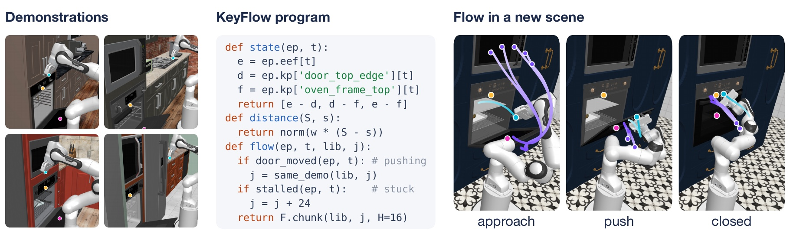
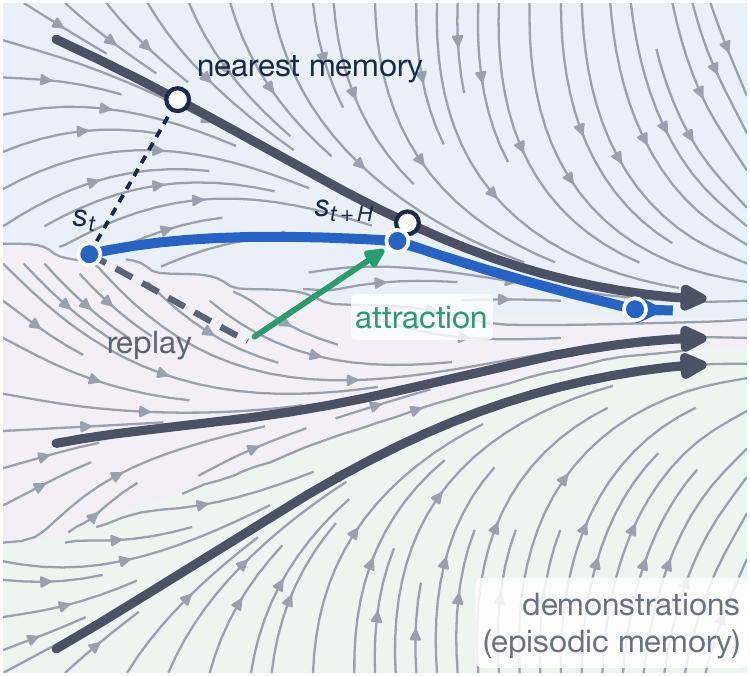
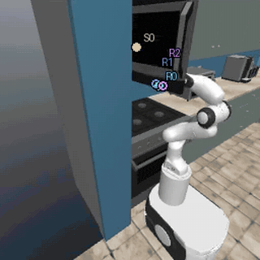
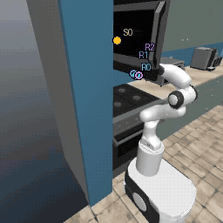
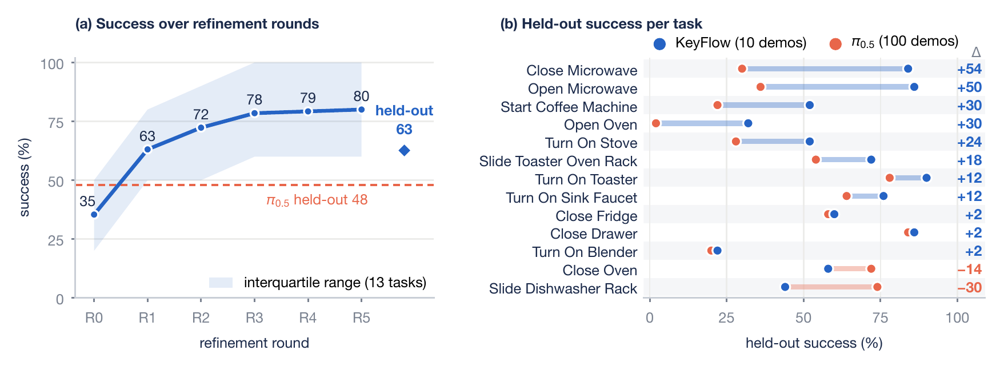
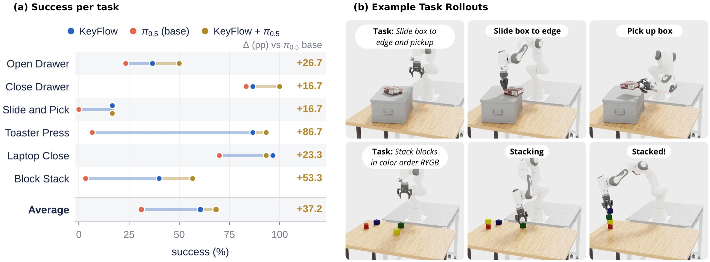

flow from retrieved demonstrationsexecuted end-effector pathscene keypoints
From ten demonstrations, a coding agent writes the keypoints and short programs that turn an episodic memory into a policy, and revises them from its own play rollouts, without retraining.
Abstract
A few demonstrations often contain the motion a robot needs in a new scene; what fails is the policy's notion of which parts of the scene matter. Correcting this in a learned policy means collecting more data and retraining, and even then it is hard to see what changed. We present KeyFlow, in which a coding agent adapts a policy by revising how a small set of demonstrations is represented and reused. The agent describes the scene with a few semantic 3D keypoints, which a vision-language model grounds in each new scene, and writes short programs that define the state, a distance between states, and how retrieved demonstration motion is carried into the current scene. Retrieval from this episodic memory defines a flow field that the end effector follows. The agent runs the policy on simulated play scenes, inspects keypoint-annotated rollouts, and revises the keypoints and programs, without new demonstrations or weight updates. On 13 RoboCasa manipulation tasks covering articulated doors, drawers, sliding racks and appliance controls, KeyFlow outperforms a vision-language-action model fine-tuned on ten times as many demonstrations, and agentic refinement improves held-out success on nearly every task. In IsaacSim, KeyFlow flow fields also guide a base π0.5 policy without retraining it, raising its mean success across six tasks by 37.2 percentage points.
Method
Demonstrations, a program, and a flow

KeyFlow on Close Oven. The agent writes the keypoints and a program for the state, the distance between states and how retrieved demonstrations become actions. Retrieval under this program carries the robot from evenly spaced starting points (purple) to the door-closing motion.
Close Oven · the program the agent wrote (selected round, unedited)state · distance · flow
import numpy as np
from loop import flowlib as F
H = 16
STALL_WINDOW = 24
STALL_EPS = 0.015
JUMP = 24
PUSH_MOVED = 0.03
WIN = 8defmetric(keypoints):
return float(np.linalg.norm(keypoints['door_top_edge'] - keypoints['oven_frame_top']))
defstate(ep, t):
e = ep.eef[t]
d = ep.keypoints['door_top_edge'][t]
f = ep.keypoints['oven_frame_top'][t]
side = np.where(ep.keypoints['oven_frame_top'][0][1] > 0.0, 1.0, -1.0)
return np.concatenate([e - d, d - f, e - f, np.array([side])])
defdistance(S, s):
w = np.array([1.0, 1.0, 1.0, 1.5, 1.5, 1.5, 0.5, 0.5, 0.5, 100.0])
return np.sqrt(np.sum(np.square(S - s) * w, axis=1))
defflow(ep, t, lib, j):
jj = j
d = ep.keypoints['door_top_edge'][t]
d0 = ep.keypoints['door_top_edge'][0]
if t > WIN and float(np.linalg.norm(d - d0)) > PUSH_MOVED:
A = lib.actions
n = len(A)
err = np.zeros(n)
for i in range(WIN):
shifted = np.concatenate([np.full((i, 12), 9.0), A[0:n - i]], axis=0)
err = err + np.linalg.norm(shifted - ep.action[t - 1 - i], axis=1)
r = int(np.where(err == np.min(err))[0][0])
if float(err[r]) < 1e-4:
demo_ids = np.asarray(lib.index)[:, 0]
prev_demo = int(demo_ids[r])
e = ep.eef[t]
f = ep.keypoints['oven_frame_top'][t]
side = np.where(ep.keypoints['oven_frame_top'][0][1] > 0.0, 1.0, -1.0)
s = np.concatenate([e - d, d - f, e - f, np.array([side])])
w = np.array([1.0, 1.0, 1.0, 1.5, 1.5, 1.5, 0.5, 0.5, 0.5, 100.0])
dist = np.sqrt(np.sum(np.square(lib.S - s) * w, axis=1))
dist = dist + np.where(demo_ids == prev_demo, 0.0, 1e6)
jj = int(np.where(dist == np.min(dist))[0][0])
ei = int(lib.index[jj][0])
fi = int(lib.index[jj][1])
k = jj
if t >= STALL_WINDOW:
moved = float(np.linalg.norm(ep.eef[t] - ep.eef[t - STALL_WINDOW]))
if moved < STALL_EPS:
if jj + JUMP < len(lib.index):
if int(lib.index[jj + JUMP][0]) == ei and int(lib.index[jj + JUMP][1]) == fi + JUMP:
k = jj + JUMP
return F.chunk(lib, k, H)
The complete program behind the Close Oven policy evaluated on held-out kitchens. F.chunk replays the next H recorded demonstration actions from the retrieved memory; the agent added the push-phase lock (follow the same demonstration once the door has moved) and the stall jump after reading its play rollouts.
01 · KEYPOINTS
Describe what matters in words
The agent names a few scene keypoints with text descriptions, such as “midpoint of the free top edge of the open oven door”. A vision-language model grounds each description in several camera views of the first frame, and the robot's own keypoints come from forward kinematics. The same descriptions label every demonstration, so demonstrations and new scenes share one state space.
Keypoints the agent wrote for Close Oven
door_top_edge: “Midpoint of the free top edge of the open oven door (the edge farthest from the hinge, where the door handle bar is), on the door itself, not the glass window and not the rack.”
oven_frame_top: “Midpoint of the top edge of the oven's front opening frame (the fixed oven body just above the cavity, where the closed door's top edge would rest).”
Robot keypoints (robot_eef) come from forward kinematics.
02 · FLOW FROM EPISODIC MEMORY
Retrieve, replay, re-retrieve
At each chunk boundary the policy retrieves the stored moment closest to the current state under the agent's distance, replays the next motion that demonstration made, optionally pulled toward where the demonstration would be in the current scene, and retrieves again. Over all states this defines a flow field whose streamlines are the demonstrations.

Each chunk replays the retrieved demonstration (dashed) plus an attraction term (green), then re-retrieves at the next boundary.
03 · AGENTIC REFINEMENT
Diagnose failures in play, revise the program
A persistent coding-agent session runs each version of the policy on a fixed set of simulated play scenes and reads the outcomes, keypoint-annotated videos and retrieval distances over time. It then edits the keypoints and programs. The best version on play is frozen and evaluated once on unseen kitchens.
On Close Microwave, the agent traced a failure to a door keypoint grounded off the door and added a first-frame plausibility check. Same demonstrations, no training.

Round 1: door untouched

Round 2: door closed
Results
13 RoboCasa tasks, 50 unseen kitchens each
62.6%KeyFlow · 10 demos per task
47.8%π0.5 fine-tuned · 100 demos per task
32.5% → 62.6%agent's first policy → after refinement
Held-out rollouts of the selected KeyFlow policy in kitchens it never saw during refinement (sped up 2×). Each clip is a successful episode; the numbers give success over all 50 held-out scenes.

(a) Play success over refinement rounds, averaged over tasks; the diamond is held-out success of the selected policies and the dashed line is π0.5 on the same held-out scenes. (b) Held-out success per task, sorted by the difference Δ. π0.5 without fine-tuning scores 0% on every task.
Composition with a foundation model
KeyFlow guides a base π0.5 policy in IsaacSim
The same agent loop produces flow fields that steer a base π0.5 policy, with no retraining of the base model. Across six tasks and 30 held-out scenes per task, the composed policy improves mean success by 37.2 percentage points over base π0.5 and beats it on every task, with the largest gains on Toaster Press (+86.7) and Block Stack (+53.3).
+37.2 ppπ0.5 + KeyFlow vs. base π0.5, mean over 6 tasks
6 / 6tasks improved over base π0.5
10demonstrations per task (20 for Slide and Pick)

(a) Held-out success per task (30 scenes) of KeyFlow, base π0.5, and π0.5 + KeyFlow; Δ is the gain of the composed policy over base π0.5. (b) Example rollouts of the composed policy: slide a box to the table edge and pick it up, and stack blocks in color order.
Rollout gallery
π0.5 + KeyFlow · real-time speed (1×)
Every clip is the composed policy, base π0.5 guided by KeyFlow, running in IsaacSim, unedited and not sped up. Pink dots mark the grounded scene keypoints where shown. Red labels mark initial conditions or scene layouts that never appear in the demonstrations.
1× real timeUnseen initial condition
Block Stack · Two blocks already start stacked, an initial condition that never appears in the demonstrations.
1× real time
Block Stack · Stack four blocks in color order; keypoints shown.
1× real time
Block Stack · Stack blocks in color order.
1× real timeUnseen scene layout
Slide and Pick · The box rests on a flat board instead of a bin, a layout that never appears in the demonstrations.
1× real time
Slide and Pick · Slide the box to the bin edge, then pick it up.
1× real time
Slide and Pick · Several pushes before the box clears the edge, then the pick (26 s).
1× real timeUnseen scene layout
Slide and Pick · Robot mounted on the other side of the table, a layout that never appears in the demonstrations.
1× real time
Slide and Pick · Keypoints shown.
1× real time
Slide and Pick · Slide the box to the edge, then pick it up.
1× real timeUnseen scene layout
Open Drawer · Robot mounted on the other side of the table, a layout that never appears in the demonstrations.
1× real time
Open Drawer · Keypoints shown.
1× real time
Open Drawer · Second camera view.
1× real time
Open Drawer · A different drawer.
1× real time
Toaster Press · Press the toaster lever down.
1× real time
Laptop Close · Keypoints shown.
BibTeX
@inproceedings{zandonati2026agentic,
title = {Agentic Policy Adaptation with Episodic Memory},
author = {Zandonati, Ben and Kang, Yifan and Lozano-Pérez, Tomás and Kaelbling, Leslie Pack},
booktitle = {CoRL Workshop Learn@Deploy},
url = {https://openreview.net/forum?id=q9pu4hBd2X},
year = {2026}
}